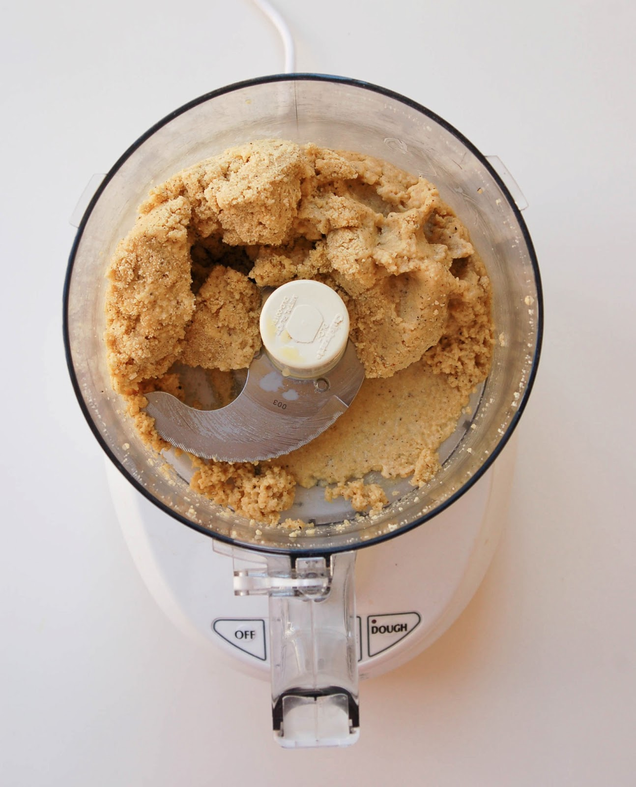

Step 1: In a food processor, pulse the flour with the salt, nutmeg and the 1 tablespoon of semolina. Add the eggs and pulse until incorporated. With the machine on, add the olive oil in a thin stream and process just until moistened crumbs form. Turn the crumbs out onto a semolina-dusted work surface and knead just until a smooth dough forms. Wrap the dough in plastic and let stand at room temperature for 30 minutes.
